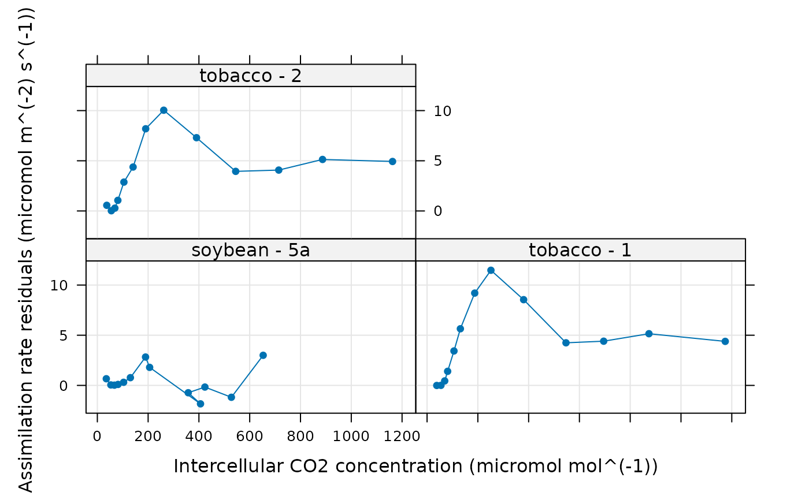
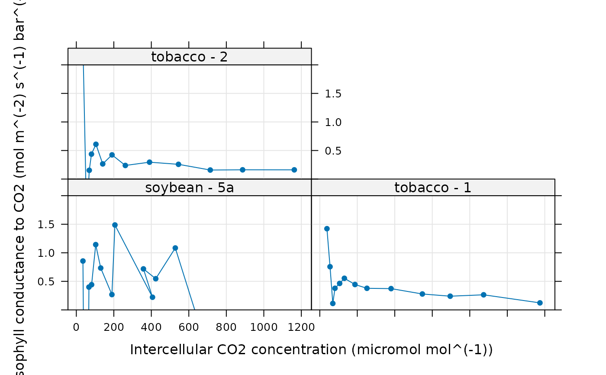

Fits a C3 assimilation model to an experimental curve
fit_c3_variable_j.RdFits a model to an experimentally measured C3 CO2 response curve + chlorophyll
fluorescence using the data in the exdf object along with a few other
user-supplied parameters. This function can accomodate alternative column
names for the variables taken from the data file in case they change at some
point in the future. This function also checks the units of each required
column and will produce an error if any units are incorrect.
Usage
fit_c3_variable_j(
replicate_exdf,
Ca_atmospheric = NA,
a_column_name = 'A',
ca_column_name = 'Ca',
ci_column_name = 'Ci',
etr_column_name = 'ETR',
j_norm_column_name = 'J_norm',
kc_column_name = 'Kc',
ko_column_name = 'Ko',
oxygen_column_name = 'oxygen',
phips2_column_name = 'PhiPS2',
qin_column_name = 'Qin',
rl_norm_column_name = 'RL_norm',
total_pressure_column_name = 'total_pressure',
vcmax_norm_column_name = 'Vcmax_norm',
sd_A = 'RMSE',
atp_use = 4.0,
nadph_use = 8.0,
curvature_cj = 1.0,
curvature_cjp = 1.0,
OPTIM_FUN = optimizer_deoptim(400),
lower = list(),
upper = list(),
fit_options = list(),
cj_crossover_min = NA,
cj_crossover_max = NA,
require_positive_gmc = 'positive_a',
gmc_max = Inf,
error_threshold_factor = 0.147,
hard_constraints = 0,
calculate_confidence_intervals = TRUE,
remove_unreliable_param = 2
)Arguments
- replicate_exdf
An
exdfobject representing one CO2 response curve.- Ca_atmospheric
The atmospheric CO2 concentration (with units of
micromol mol^(-1)); this will be used byestimate_operating_pointto estimate the operating point. A value ofNAdisables this feature.- a_column_name
The name of the column in
replicate_exdfthat contains the net assimilation inmicromol m^(-2) s^(-1).- ca_column_name
The name of the column in
replicate_exdfthat contains the ambient CO2 concentration inmicromol mol^(-1).- ci_column_name
The name of the column in
replicate_exdfthat contains the intercellular CO2 concentration inmicromol mol^(-1).- etr_column_name
The name of the column in
rc_exdfthat contains the electron transport rate as estimated by the measurement system inmicromol m^(-2) s^(-1).- j_norm_column_name
The name of the column in
replicate_exdfthat contains the normalizedJvalues (with units ofnormalized to J at 25 degrees C).- kc_column_name
The name of the column in
replicate_exdfthat contains the Michaelis-Menten constant for rubisco carboxylation inmicromol mol^(-1).- ko_column_name
The name of the column in
replicate_exdfthat contains the Michaelis-Menten constant for rubisco oxygenation inmmol mol^(-1).- oxygen_column_name
The name of the column in
exdf_objthat contains the concentration of O2 in the ambient air, expressed as a percentage (commonly 21% or 2%); the units must bepercent.- phips2_column_name
The name of the column in
exdf_objthat contains values of the operating efficiency of photosystem II (dimensionless).- qin_column_name
The name of the column in
exdf_objthat contains values of the incident photosynthetically active flux density inmicromol m^(-2) s^(-1).- rl_norm_column_name
The name of the column in
replicate_exdfthat contains the normalizedRLvalues (with units ofnormalized to RL at 25 degrees C).- total_pressure_column_name
The name of the column in
replicate_exdfthat contains the total pressure inbar.- vcmax_norm_column_name
The name of the column in
replicate_exdfthat contains the normalizedVcmaxvalues (with units ofnormalized to Vcmax at 25 degrees C).- sd_A
A value of the standard deviation of measured
Avalues, or the name of a method for determining the deviation; currently, the only supported option is'RMSE'.- atp_use
The number of ATP molecules used per C3 cycle.
- nadph_use
The number of NADPH molecules used per C3 cycle.
- curvature_cj
A dimensionless quadratic curvature parameter greater than or equal to 0 and less than or equal to 1 that sets the degree of co-limitation between
WcandWj. A value of 1 indicates no co-limitation.- curvature_cjp
A dimensionless quadratic curvature parameter greater than or equal to 0 and less than or equal to 1 that sets the degree of co-limitation between
WcjandWp. A value of 1 indicates no co-limitation.- OPTIM_FUN
An optimization function that accepts the following input arguments: an initial guess, an error function, lower bounds, and upper bounds. It should return a list with the following elements:
par,convergence,value, and (optionally)message. The default option is an evolutionary optimizer that runs slow but tends to find good fits for most curves.optimizer_nmkbcan also be used; it is faster, but doesn't always find a good fit.- lower
A list of named numeric elements representing lower bounds to use when fitting. Values supplied here override the default values (see details below). For example,
lower = list(Vcmax_at_25 = 10)sets the lower limit forVcmax_at_25to 10 micromol / m^2 / s.- upper
A list of named numeric elements representing upper bounds to use when fitting. Values supplied here override the default values (see details below). For example,
upper = list(Vcmax_at_25 = 200)sets the upper limit forVcmax_at_25to 200 micromol / m^2 / s.- fit_options
A list of named elements representing fit options to use for each parameter. Values supplied here override the default values (see details below). Each element must be
'fit','column', or a numeric value. A value of'fit'means that the parameter will be fit; a value of'column'means that the value of the parameter will be taken from a column inexdf_objof the same name; and a numeric value means that the parameter will be set to that value. For example,fit_options = list(alpha_g = 0, Vcmax_at_25 = 'fit', Tp = 'column')means thatalpha_gwill be set to 0,Vcmax_at_25will be fit, andTpwill be set to the values in theTpcolumn ofexdf_obj.- cj_crossover_min
To be passed to
error_function_c3_variable_j.- cj_crossover_max
To be passed to
error_function_c3_variable_j.- require_positive_gmc
To be passed to
error_function_c3_variable_j.- gmc_max
To be passed to
error_function_c3_variable_j.- error_threshold_factor
To be passed to
confidence_intervals_c3_variable_jwhencalculate_confidence_intervalsisTRUE.- hard_constraints
To be passed to
calculate_c3_assimilationandcalculate_c3_variable_j; see those functions for more details.- calculate_confidence_intervals
A logical value indicating whether or not to estimate confidence intervals for the fitting parameters using
confidence_intervals_c3_variable_j.- remove_unreliable_param
An integer value indicating the rules to use when identifying and removing unreliable parameter estimates. A value of 2 is the most conservative option. A value of 0 disables this feature, which is not typically recommended. See below for more details.
Details
This function calls calculate_c3_variable_j and
calculate_c3_assimilation to calculate values of net
assimilation. The user-supplied optimization function is used to vary the
values of alpha_g, alpha_old, alpha_s, J_at_25,
RL_at_25, tau, Tp, and Vcmax_at_25 to find ones
that best reproduce the experimentally measured values of net assimilation. By
default, the following options are used for the fits:
alpha_g: lower = 0, upper = 10, fit_option = 0alpha_old: lower = 0, upper = 10, fit_option ='fit'alpha_s: lower = 0, upper = 10, fit_option = 0Gamma_star: lower = -20, upper = 200, fit_option ='column'J_at_25: lower = -50, upper = 1000, fit_option ='fit'RL_at_25: lower = -10, upper = 100, fit_option ='fit'tau: lower = -10, upper = 10, fit_option ='fit'Tp: lower = -10, upper = 100, fit_option ='fit'Vcmax_at_25: lower = -50, upper = 1000, fit_option ='fit'
With these settings, all "new" alpha parameters are set to 0, values of
Gamma_star are taken from the Gamma_star column of
replicate_exdf, and the other parameters are fit during the process
(see fit_options above). The bounds are chosen liberally to avoid any
bias.
An initial guess for the parameters is generated by calling
initial_guess_c3_variable_j as follows:
cc_threshold_rdis set to 100 micromol / mol.If
alpha_gis being fit, thealpha_gargument ofinitial_guess_c3_aciis set to 0.5; otherwise, the argument is set to the value specified by the fit options.If
alpha_oldis being fit, thealpha_oldargument ofinitial_guess_c3_aciis set to 0.5; otherwise, the argument is set to the value specified by the fit options.if
alpha_sis being fit, thealpha_sargument ofinitial_guess_c3_aciis set to0.3 * (1 - alpha_g); otherwise, the argument is set to the value specified by the fit options.If
Gamma_staris being fit, theGamma_starargument ofinitial_guess_c3_aciis set to 40; otherwise, the argument is set to the value specified by the fit options.
Note that any fixed values specified in the fit options will override the values returned by the guessing function.
The fit is made by creating an error function using
error_function_c3_variable_j and minimizing its value using
OPTIM_FUN, starting from the initial guess described above. The
optimizer_deoptim optimizer is used by default since it has been
found to reliably return great fits. However, it is a slow optimizer. If speed
is important, consider reducing the number of generations or using
optimizer_nmkb, but be aware that this optimizer is more likely
to get stuck in a local minimum.
The photosynthesis model used here is not smooth in the sense that small
changes in the input parameters do not necessarily cause changes in its
outputs. This is related to the final step in the calculations, where the
overall assimilation rate is taken to be the minimum of three enzyme-limited
rates. For example, if the assimilation rate is never phosphate-limited,
modifying Tp will not change the model's outputs. For this reason,
derivative-based optimizers tend to struggle when fitting C3 A-Ci curves. Best
results are obtained using derivative-free methods. It has been found that
DEoptim is often able to find a good fit, although it
may take a few minutes to run for a single curve.
Sometimes the optimizer may choose a set of parameter values where one or more
of the potential limiting carboxylation rates (Wc, Wj, or
Wp) is never the smallest rate. In this case, the corresponding
parameter estimates (Vcmax, J, or alpha & Tp)
will be unreliable. If remove_unreliable_param is 1 or larger, then
such parameter estimates (and the corresponding rates) will be replaced by
NA in the fitting results.
It is also possible that the upper limit of the confidence interval for a
parameter is infinity; this also indicates an unreliable parameter estimate.
If remove_unreliable_param is 2 or larger, then such parameter
estimates (but not the corresponding rates) will be replaced by NA in
the fitting results.
These criteria are used to determine the reliability of each parameter
estimate, which is indicated in the Vcmax_trust, J_trust,
alpha_g_trust, alpha_old_trust, alpha_s_trust, and
Tp_trust columns of the output from fit_c3_variable_j, where a
value of 0 indicates an unreliable estimate and 1 indicates a
reliable estimate.
Once the best-fit parameters have been determined, this function also
estimates the operating value of `Cc from the atmospheric CO2
concentration atmospheric_ca using
estimate_operating_point, and then uses that value to estimate
the modeled An at the operating point via
calculate_c3_assimilation. It also estimates the
Akaike information criterion (AIC).
This function assumes that replicate_exdf represents a single
C3 A-Ci curve. To fit multiple curves at once, this function is often used
along with by.exdf and consolidate.
Value
A list with two elements:
fits: Anexdfobject including the original contents ofreplicate_exdfalong with several new columns:The fitted values of net assimilation will be stored in a column whose name is determined by appending
'_fit'to the end ofa_column_name; typically, this will be'A_fit'.Residuals (measured - fitted) will be stored in a column whose name is determined by appending
'_residuals'to the end ofa_column_name; typically, this will be'A_residuals'.Values of fitting parameters at 25 degrees C will be stored in the
J_at_25,RL_at_25, andVcmax_at_25columns.The other outputs from
calculate_c3_variable_jandcalculate_c3_assimilationwill be stored in columns with the usual names:alpha_g,alpha_old,alpha_s,tau,Tp,Vcmax_tl,RL_tl,J_tl,Ac,Aj,Ap,gmc,J_F, andCc.
fits_interpolated: Anexdfobject including the calculated assimilation rates at a fine spacing ofCivalues (step size of 1micromol mol^(-1)).parameters: Anexdfobject including the identifiers, fitting parameters, and convergence information for the A-Ci curve:The number of points where
Wc,Wj, andWpare each the smallest potential carboxylation are stored in then_Wc_smallest,n_Wj_smallest, andn_Wp_smallestcolumns.The best-fit values are stored in the
alpha_g,alpha_old,alpha_s,tau,Tp,J_at_25,RL_at_25, andVcmax_at_25columns. Ifcalculate_confidence_intervalsisTRUE, upper and lower limits for each of these parameters will also be included.For parameters that depend on leaf temperature, the average leaf-temperature-dependent values are stored in
X_tl_avgcolumns:J_tl_avg,RL_tl_avg, andVcmax_tl_avg.Information about the operating point is stored in
operating_Cc,operating_Ci,operating_An, andoperating_An_model.The
convergencecolumn indicates whether the fit was successful (==0) or if the optimizer encountered a problem (!=0).The
fevalcolumn indicates how many cost function evaluations were required while finding the optimal parameter values.The residual stats as returned by
residual_statsare included as columns with the default names:dof,RSS,RMSE, etc.The Akaike information criterion is included in the
AICcolumn.
Examples
# Read an example Licor file included in the PhotoGEA package
licor_file <- read_gasex_file(
PhotoGEA_example_file_path('c3_aci_1.xlsx')
)
# Define a new column that uniquely identifies each curve
licor_file[, 'species_plot'] <-
paste(licor_file[, 'species'], '-', licor_file[, 'plot'] )
# Organize the data
licor_file <- organize_response_curve_data(
licor_file,
'species_plot',
c(9, 10, 16),
'CO2_r_sp'
)
# Calculate the total pressure in the Licor chamber
licor_file <- calculate_total_pressure(licor_file)
# Calculate temperature-dependent values of C3 photosynthetic parameters
licor_file <- calculate_arrhenius(licor_file, c3_arrhenius_bernacchi)
# For these examples, we will use a faster (but sometimes less reliable)
# optimizer so they run faster
optimizer <- optimizer_nmkb(1e-7)
# Fit just one curve from the data set (it is rare to do this).
# \donttest{
one_result <- fit_c3_variable_j(
licor_file[licor_file[, 'species_plot'] == 'tobacco - 1', , TRUE],
Ca_atmospheric = 420,
OPTIM_FUN = optimizer
)
# }
# Fit all curves in the data set (it is more common to do this).
aci_results <- consolidate(by(
licor_file,
licor_file[, 'species_plot'],
fit_c3_variable_j,
Ca_atmospheric = 420,
OPTIM_FUN = optimizer
))
# View the fitting parameters for each species / plot
col_to_keep <- c(
'species', 'plot', # identifiers
'n_Wc_smallest', 'n_Wj_smallest', 'n_Wp_smallest', # number of points where
# each process is limiting
'tau', 'Tp', # parameters with temperature response
'J_at_25', 'RL_at_25', 'Vcmax_at_25', # parameters scaled to 25 degrees C
'J_tl_avg', 'RL_tl_avg', 'Vcmax_tl_avg', # average temperature-dependent values
'operating_Ci', 'operating_An', 'operating_An_model', # operating point info
'dof', 'RSS', 'MSE', 'RMSE', 'RSE', # residual stats
'convergence', 'convergence_msg', 'feval', 'optimum_val' # convergence info
)
aci_results$parameters[ , col_to_keep, TRUE]
#> species [UserDefCon] (NA) plot [UserDefCon] (NA)
#> 1 soybean 5a
#> 2 tobacco 1
#> 3 tobacco 2
#> n_Wc_smallest [identify_c3_unreliable_points] ()
#> 1 8
#> 2 8
#> 3 8
#> n_Wj_smallest [identify_c3_unreliable_points] ()
#> 1 5
#> 2 5
#> 3 5
#> n_Wp_smallest [identify_c3_unreliable_points] ()
#> 1 0
#> 2 0
#> 3 0
#> tau [fit_c3_variable_j] (micromol m^(-2) s^(-1))
#> 1 0.4436990
#> 2 0.4000208
#> 3 0.3963648
#> Tp [fit_c3_variable_j] (micromol m^(-2) s^(-1))
#> 1 NA
#> 2 NA
#> 3 NA
#> J_at_25 [fit_c3_variable_j] (micromol m^(-2) s^(-1))
#> 1 212.4077
#> 2 250.7897
#> 3 224.2421
#> RL_at_25 [fit_c3_variable_j] (micromol m^(-2) s^(-1))
#> 1 -0.2815036
#> 2 1.8618873
#> 3 1.5671355
#> Vcmax_at_25 [fit_c3_variable_j] (micromol m^(-2) s^(-1))
#> 1 211.2268
#> 2 236.2009
#> 3 218.7872
#> J_tl_avg [fit_c3_variable_j] (micromol m^(-2) s^(-1))
#> 1 298.3827
#> 2 345.4436
#> 3 310.5126
#> RL_tl_avg [fit_c3_variable_j] (micromol m^(-2) s^(-1))
#> 1 -0.3975473
#> 2 2.5748708
#> 3 2.1794852
#> Vcmax_tl_avg [fit_c3_variable_j] (micromol m^(-2) s^(-1))
#> 1 339.0668
#> 2 368.1284
#> 3 343.6897
#> operating_Ci [estimate_operating_point] (micromol mol^(-1))
#> 1 264.3297
#> 2 294.7032
#> 3 301.2673
#> operating_An [estimate_operating_point] (micromol m^(-2) s^(-1))
#> 1 31.00316
#> 2 37.51608
#> 3 31.57904
#> operating_An_model [fit_c3_variable_j] (micromol m^(-2) s^(-1))
#> 1 31.94183
#> 2 40.07614
#> 3 34.02476
#> dof [residual_stats] (NA) RSS [residual_stats] ((micromol m^(-2) s^(-1))^2)
#> 1 7 12.731115
#> 2 7 6.782660
#> 3 7 6.077659
#> MSE [residual_stats] ((micromol m^(-2) s^(-1))^2)
#> 1 0.9793166
#> 2 0.5217430
#> 3 0.4675123
#> RMSE [residual_stats] (micromol m^(-2) s^(-1))
#> 1 0.9896042
#> 2 0.7223178
#> 3 0.6837487
#> RSE [residual_stats] (micromol m^(-2) s^(-1))
#> 1 1.3486033
#> 2 0.9843533
#> 3 0.9317924
#> convergence [fit_c3_variable_j] () convergence_msg [fit_c3_variable_j] ()
#> 1 0 Successful convergence
#> 2 0 Successful convergence
#> 3 0 Successful convergence
#> feval [fit_c3_variable_j] () optimum_val [fit_c3_variable_j] ()
#> 1 1178 18.31035
#> 2 908 14.21743
#> 3 820 13.50406
# View the fits for each species / plot
plot_c3_aci_fit(aci_results, 'species_plot', 'Ci')
# View the residuals for each species / plot
lattice::xyplot(
A_residuals ~ Ci | species_plot,
data = aci_results$fits$main_data,
type = 'b',
pch = 16,
auto = TRUE,
grid = TRUE,
xlab = paste0('Intercellular CO2 concentration (', aci_results$fits$units$Ci, ')'),
ylab = paste0('Assimilation rate residuals (', aci_results$fits$units$A_residuals, ')')
)

# View the estimated mesophyll conductance values for each species / plot
lattice::xyplot(
gmc ~ Ci | species_plot,
data = aci_results$fits$main_data,
type = 'b',
pch = 16,
auto = TRUE,
grid = TRUE,
xlab = paste0('Intercellular CO2 concentration (', aci_results$fits$units$Ci, ')'),
ylab = paste0('Mesophyll conductance to CO2 (', aci_results$fits$units$gmc, ')'),
ylim = c(0, 2)
)

# In some of the curves above, there are no points where carboxylation is TPU
# limited. Estimates of Tp are therefore unreliable and are removed.